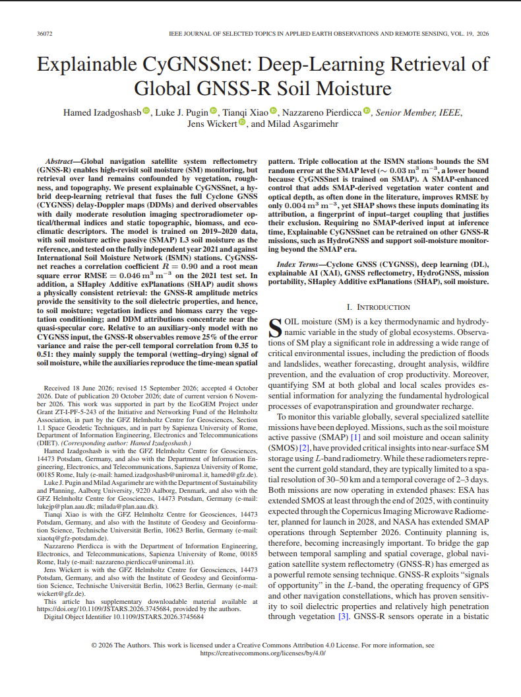

Journal Article
Open Access · CC BY 4.0
2026
Explainable CyGNSSnet: Deep-Learning Retrieval of Global GNSS-R Soil Moisture
IEEE Journal of Selected Topics in Applied Earth Observations and Remote Sensing (JSTARS), vol. 19, pp. 36072–36096, 2026
Global soil moisture retrieval from NASA's CYGNSS spaceborne GNSS Reflectometry observations with the deep-learning model CyGNSSnet, extended with Explainable AI to show which inputs drive the model's predictions. The work is a collaboration between GFZ Potsdam, Aalborg University and Sapienza University of Rome.